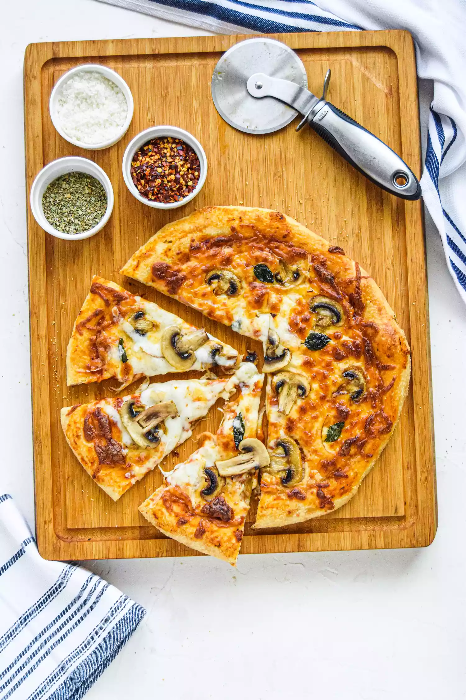

Homemade Pizza

Description
Make perfect pizza at home with this classic homemade pizza recipe, including a pizza dough recipe, topping suggestions, and step-by-step instructions
- Side note: Bread flour is the best flour for homemade pizza dough. You can use all-purpose flour instead of the bread flour called for in the recipe, but bread flour is higher in gluten than all-purpose flour and will make a crispier crust for your pizza.
Ingredients
- Extra vrigin olive oil
- Cornmeal
- Tomato sauce (smooth or pureed)
- Firm grated mozzarella cheese
- Fresh soft mozzarella cheese seperated into small clumps
- Grated fontina cheese
- Grated parmesan cheese
- Crumbled feta cheese
- Very thinly sliced raw mushrooms (first sautéed if they're not raw)
- Very thinly sliced bell peppers (stems and seeds removed)
- Thinly sliced italian pepperoncini
- Italian sausage cooked ahead and crumbled
- Sliced black olives
- Chopped fresh basil
- Baby arugula
- Pesto
- Thinly sliced pepperoni
- Thinly sliced raw onions or caramelized
- Thinly sliced ham